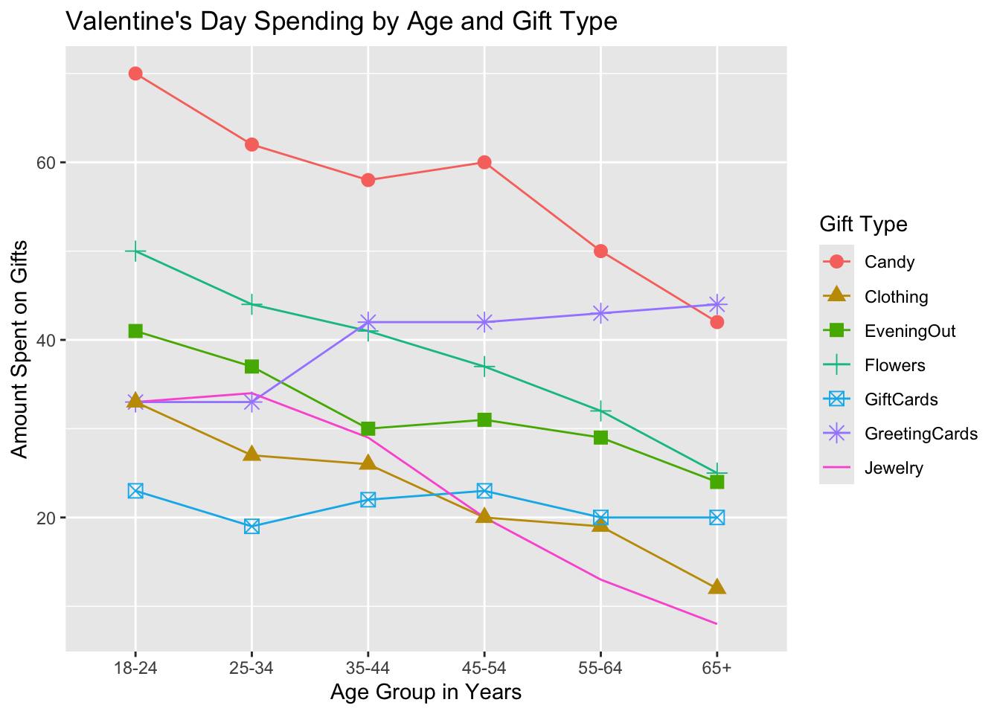

I have chosen the ‘Valentine’s Day Spending’ data set.
First, let’s take a look at the data set provided. To do this we need to do a basic set up.
library(tidyverse)
── Attaching core tidyverse packages ──────────────────────── tidyverse 2.0.0 ──
✔ dplyr 1.1.4 ✔ readr 2.1.5
✔ forcats 1.0.0 ✔ stringr 1.5.1
✔ ggplot2 3.5.1 ✔ tibble 3.2.1
✔ lubridate 1.9.3 ✔ tidyr 1.3.1
✔ purrr 1.0.2
── Conflicts ────────────────────────────────────────── tidyverse_conflicts() ──
✖ dplyr::filter() masks stats::filter()
✖ dplyr::lag() masks stats::lag()
ℹ Use the conflicted package (<http://conflicted.r-lib.org/>) to force all conflicts to become errors
library(mosaic)
Registered S3 method overwritten by 'mosaic':
method from
fortify.SpatialPolygonsDataFrame ggplot2
The 'mosaic' package masks several functions from core packages in order to add
additional features. The original behavior of these functions should not be affected by this.
Attaching package: 'mosaic'
The following object is masked from 'package:Matrix':
mean
The following objects are masked from 'package:dplyr':
count, do, tally
The following object is masked from 'package:purrr':
cross
The following object is masked from 'package:ggplot2':
stat
The following objects are masked from 'package:stats':
binom.test, cor, cor.test, cov, fivenum, IQR, median, prop.test,
quantile, sd, t.test, var
The following objects are masked from 'package:base':
max, mean, min, prod, range, sample, sum
library(skimr)
Attaching package: 'skimr'
The following object is masked from 'package:mosaic':
n_missing
Rows: 6 Columns: 9
── Column specification ────────────────────────────────────────────────────────
Delimiter: ","
chr (1): Age
dbl (8): SpendingCelebrating, Candy, Flowers, Jewelry, GreetingCards, Evenin...
ℹ Use `spec()` to retrieve the full column specification for this data.
ℹ Specify the column types or set `show_col_types = FALSE` to quiet this message.
What could be the Research experiment that might have been conducted to obtain this data?
The main aim of the study would be to understand how much different age groups spend on various types of gifts for Valentine’s Day. This can help businesses tailor their marketing strategies and product offerings based on consumer behavior.
How could it have been conducted?
A structured questionnaire could be designed to collect data on spending habits for Valentine’s Day gifts.
The target population would include individuals who celebrate Valentine’s Day across various age groups.
Once the data is collected, it could be analyzed to identify trends and patterns in spending behavior.
The resulting data from this research experiment would provide valuable insights into consumer behavior during Valentine’s Day.
Plotting the graph
# library(ggformula)# valentines_data <- data.frame(# Age = factor(c("18-24", "25-34", "35-44", "45-54", "55-64", "65+")),# SpendingCelebrating = c(51, 40, 31, 19, 18, 13),# item = c("Candy", "Flowers", "Jewelry", "GreetingCards", "EveningOut", "Clothing", "GiftCards"),# spending = c(70, 50, 33, 33, 41, 33, 23)# )# gf_line(spending ~ Age, # color = ~ item, # group = ~ item, # data = valentines_data) %>%# gf_point(spending ~ Age, # color = ~ item, # shape = ~ item, # size = 3, # data = valentines_data) %>%# gf_labs(x = "Age Group", # y = "Amount Spent on Gifts", # title = "Valentine's Day Spending by Age and Gift Type", # color = "Gift Type", # shape = "Gift Type") +# theme_minimal() + # theme(legend.position = "right")
Questions
Questions the below graph seeks to answer
How does Valentine’s Day spending vary across different age groups and gift categories?
Which age group spends the most on Valentine’s Day?
Which age group spends the least on Valentine’s day?
Are there any noticeable trends in spending patterns as age increases?
library(ggformula)# Correct data: Each age group has a corresponding spending value for each item.valentines_data <-data.frame(Age =factor(rep(c("18-24", "25-34", "35-44", "45-54", "55-64", "65+"), each =7)),SpendingCelebrating =rep(c(51, 40, 31, 19, 18, 13), each =7),item =rep(c("Candy", "Flowers", "Jewelry", "GreetingCards", "EveningOut", "Clothing", "GiftCards"), times =6),spending =c(70, 50, 33, 33, 41, 33, 23, # 18-2462, 44, 34, 33, 37, 27, 19, # 25-3458, 41, 29, 42, 30, 26, 22, # 35-4460, 37, 20, 42, 31, 20, 23, # 45-5450, 32, 13, 43, 29, 19, 20, # 55-6442, 25, 8, 44, 24, 12, 20)) # 65+# Line and scatter plot using gf_line and gf_pointvalentines_data %>%gf_line(spending ~ Age, color =~ item, group =~ item) %>%gf_point(spending ~ Age, color =~ item, shape =~ item, size =3) %>%gf_labs(x ="Age Group in Years", y ="Amount Spent on Gifts", title ="Valentine's Day Spending by Age and Gift Type", color ="Gift Type", shape ="Gift Type") +#theme_minimal() +theme(legend.position ="right")
Warning: The shape palette can deal with a maximum of 6 discrete values because more
than 6 becomes difficult to discriminate
ℹ you have requested 7 values. Consider specifying shapes manually if you need
that many have them.
Warning: Removed 6 rows containing missing values or values outside the scale range
(`geom_point()`).

To explain the code above:
data.frame creates a data frame in R, a table-like structure for organizing data.
Why to use data.frame and rep?
Even if it looks complicated, we need to do this since the number of objects in the required columns are not equal.
The data.frame function helps organize data into a tabular structure with equal-length columns. When some columns have fewer elements, we use the rep function to ensure that all columns have the same number of objects.
The rep function is used to repeat the age groups (“18-14”, “25-34”, etc.) seven times each (indicating that each age group has spending data for seven different items).
SpendingCelebrating contains values (51, 40, 31, 19, 18, 13) repeated seven times each, representing a fixed amount for each age group.
Item represents the types of gifts. The rep function repeats this list of items six times, which corresponds to the six age groups.
Spending column holds he actual spending amounts for each gift item within each age group.
gf_line initializes a line plot. The age group is on the x-axis and y-axis has the amount spent on gifts.
gf_plot initializes a scatter plot, with the same x and y-axis.
gf_lab helps to label the plot.
theme(legend.position = “right”) sets the legend on the right of the plot.
What might be the Hypothesis / Research Question, based on the Chart?
There are significant differences in the amount spent on Valentine’s Day gifts across different age groups.
Different age groups have distinct preferences for gift items on Valentine’s Day.